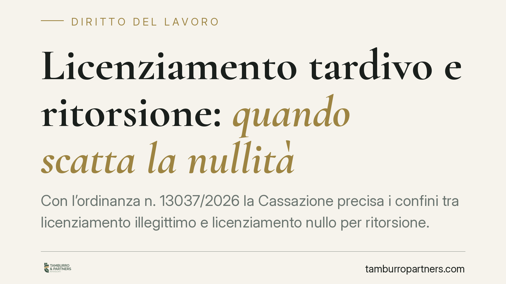

Licenziamento tardivo e ritorsione: quando scatta la nullità
Con l'ordinanza n. 13037/2026 la Cassazione precisa i confini tra licenziamento illegittimo e licenziamento nullo per ritorsione. La tardività della contestazione disciplinare rende il recesso illegittimo, ma non basta a provare l'intento ritorsivo. Se resta un inadempimento oggettivo del lavoratore, il motivo ritorsivo non è unico e determinante: la nullità è esclusa. Una distinzione con effetti concreti sulle tutele.

Il caso
Una lavoratrice viene licenziata a seguito di una contestazione disciplinare. Nei gradi di merito il recesso è dichiarato illegittimo perché la contestazione era tardiva: il datore aveva atteso troppo prima di muovere l'addebito, violando il principio di immediatezza che governa il procedimento disciplinare.
La lavoratrice sostiene però che il licenziamento fosse anche ritorsivo, cioè una reazione punitiva del datore a un comportamento legittimo di lei. Da qui la richiesta di dichiarare il recesso nullo, con la tutela reintegratoria piena. La Corte d'Appello di Milano respinge la tesi. La Cassazione conferma.
Inquadramento normativo
Occorre distinguere due piani che spesso vengono confusi.
Il licenziamento illegittimo è quello adottato in violazione di regole procedurali o privo di giusta causa o giustificato motivo. Le conseguenze variano a seconda della disciplina applicabile (tutele crescenti o art. 18 Stat. lav.), ma restano nell'area dell'illegittimità, non della nullità.
Il licenziamento ritorsivo è invece nullo ai sensi dell'art. 1418 c.c., in combinato con l'art. 1345 c.c. sul motivo illecito. La ritorsione è la reazione ingiusta del datore a un comportamento lecito del lavoratore: una vendetta mascherata da provvedimento disciplinare o organizzativo. La giurisprudenza è costante nel richiedere che il motivo ritorsivo sia unico e determinante: deve cioè essere l'unica ragione effettiva del recesso, tale che senza di esso il licenziamento non sarebbe stato intimato.
Il principio dell'ordinanza n. 13037/2026
La Cassazione afferma un punto netto: l'illegittimità del licenziamento per tardività non implica automaticamente la sua natura ritorsiva.
Se alla base del recesso esiste un inadempimento disciplinare oggettivo del lavoratore, quell'inadempimento concorre a fondare la decisione datoriale. In questo scenario il motivo ritorsivo, ammesso che sussista, non può dirsi unico e determinante, perché accanto ad esso opera una ragione reale e verificabile. Viene così a mancare il presupposto della nullità.
In altre parole: la sola ingiustificatezza del recesso non fa presumere la ritorsione. Chi invoca la nullità deve provare che l'intento punitivo è stato l'esclusiva causa del licenziamento, non una tra le possibili concause. La tardività rende il recesso censurabile sul piano procedurale, ma non trasforma l'illegittimità in nullità.
Implicazioni pratiche
Per il lavoratore la distinzione non è teorica. Le due qualificazioni portano a tutele diverse.
Il licenziamento illegittimo, nei rapporti soggetti alle tutele crescenti, dà tipicamente diritto a un'indennità risarcitoria; solo in casi determinati alla reintegra. Il licenziamento nullo per ritorsione garantisce invece la reintegrazione piena a prescindere dal regime applicabile e dalle dimensioni aziendali, oltre al risarcimento.
Allegare la ritorsione è quindi strategicamente vantaggioso, ma l'onere probatorio è severo. Non basta dimostrare che la contestazione era tardiva o infondata: serve provare l'intento persecutorio come motivo esclusivo. La presenza di un inadempimento reale del lavoratore, anche non grave abbastanza da giustificare il recesso, tende a escludere l'esclusività del motivo ritorsivo.
Per il datore di lavoro la pronuncia conferma che i vizi procedurali, pur costosi, non producono l'effetto più drastico se resta un fondamento disciplinare oggettivo. Ciò non attenua l'importanza del rispetto dei termini: la tardività resta causa di illegittimità.
Cosa fare in concreto
- Documentate la tempistica. Chi impugna deve ricostruire con precisione quando i fatti sono emersi e quando è arrivata la contestazione: la tardività si prova sui documenti.
- Distinguete i due profili. Impostate l'impugnazione tenendo separate l'illegittimità procedurale e l'eventuale nullità ritorsiva, con richieste subordinate coerenti.
- Raccogliete indizi sull'intento. Per la ritorsione servono elementi concreti (email, testimoni, sequenza cronologica dei fatti) che dimostrino la reazione punitiva a un comportamento lecito.
- Valutate l'esistenza di un inadempimento oggettivo. Se un addebito reale sussiste, calibrate le aspettative sulla tutela ottenibile: la reintegra piena diventa difficile.
- Rispettate i termini, lato datore. Consigliamo di attivare il procedimento disciplinare con immediatezza per non esporsi all'illegittimità del recesso.
Disclaimer
Contributo informativo a cura di Tamburro & Partners - Avv. Giuseppe Tamburro. Non costituisce parere legale.
Ogni storia di lavoro ha i suoi tempi.
Se gestisci HR e vuoi un confronto su contenzioso, ispezioni o licenziamenti, scrivi allo studio. Ti rispondiamo entro un giorno lavorativo.